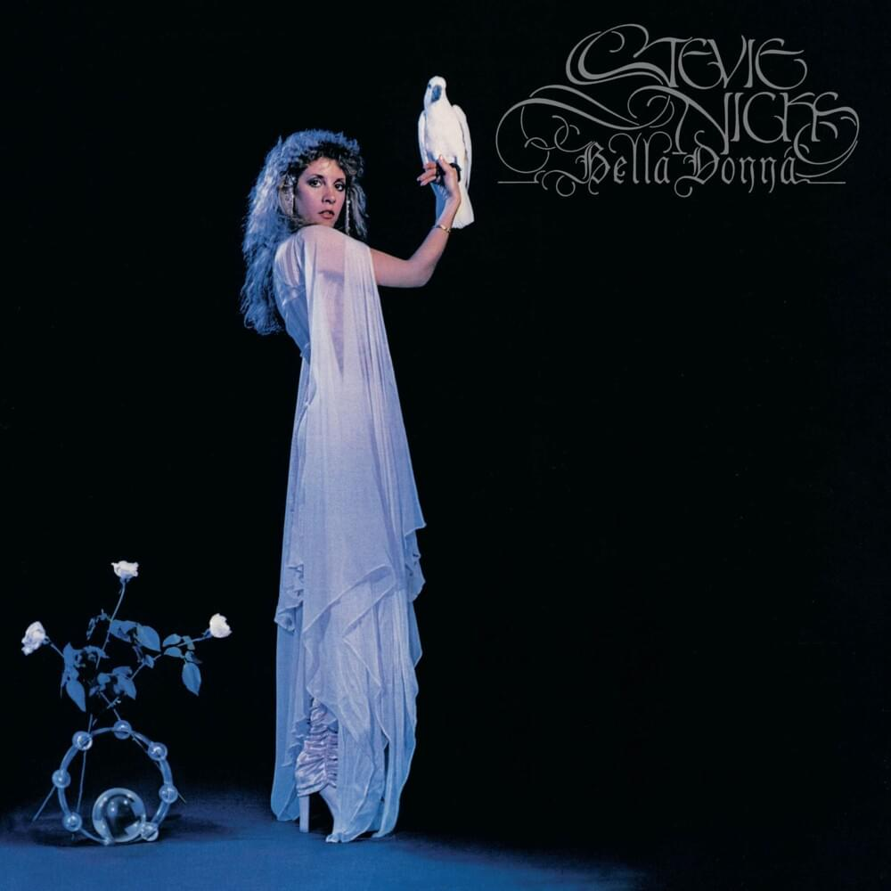

Bella Donna
Released July, 1981
Musicians:
- Stevie Nicks - vocals, tack piano.
- Waddy Wachtel - guitar.
- Davey Johnstone - acoustic guitar.
Bella Donna is the debut solo studio album by American singer and songwriter Stevie Nicks. Released on July 27, 1981, the album reached number one on the US Billboard 200 in September of that year and produced the Top 40 singles “Stop Draggin’ My Heart Around,” “Leather and Lace,” “Edge of Seventeen,” and “After the Glitter Fades.”
In 2004, the RIAA certified the album 5X platinum for the shipment of five million units to retailers. Bella Donna remains Stevie Nicks’ best selling album to date.

Side One
- Bella Donna
- Kind of Woman
- Stop Draggin My Heart Around'
- Think About It
- After the Glitter Fades
Side Two
- Edge of Seventeen
- How Still My Love
- Leather and Lace
- Outside the Rain
- The Highwayman
Bella Donna peaked at number one on the Billboard 200 charts. The album was on the charts for almost three years. The album sold over four million copies.
Stevie Nicks became a household name by being a member of the band Fleetwood Mac. By late 1980, Stevie Nicks decided she wanted to spread her wings creatively. She wanted to define her own identity.
Stephanie Lynn Nicks
"Bella Donna” is Italian for a beautiful woman.